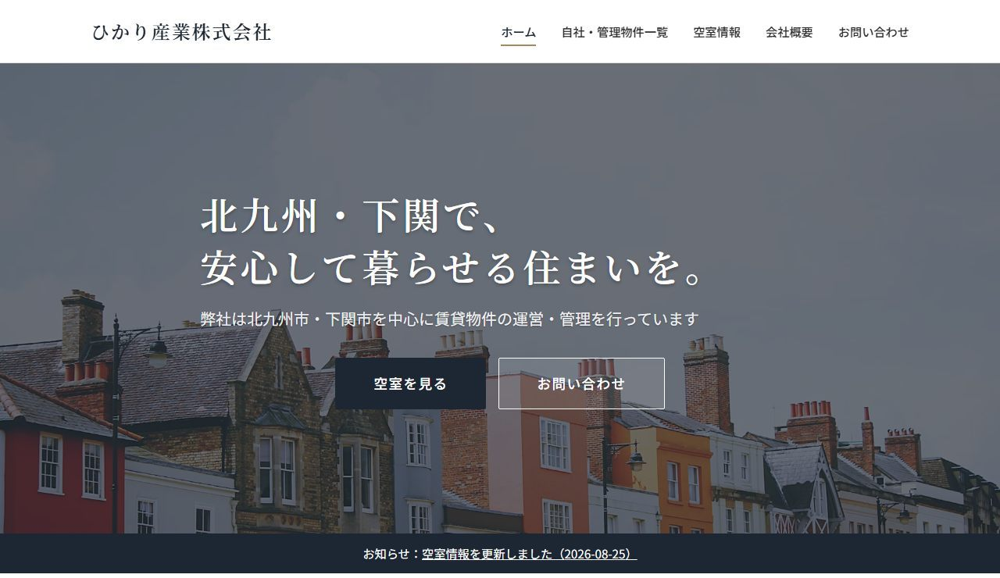

とよサポが実際に制作・運用しているホームページと、
「うちの店ならこうなる」が分かるサンプルサイトをご紹介します。

北九州市・下関市／賃貸物件の運営・管理
「会社のホームページがなく、物件を紹介するときに困る」というご相談から制作したサイトです。会社の紹介・管理物件の一覧・空室情報・お問い合わせを5ページにまとめ、募集状況が変わるたびに情報を差し替えて運用しています。
「うちの店だとどんな感じになるの？」が分かるように、
川棚エリアのお店を想定したサンプルサイトを制作しています。
初期費用0円・月額5,500円から。
「何から決めればいいか分からない」の状態で大丈夫です。